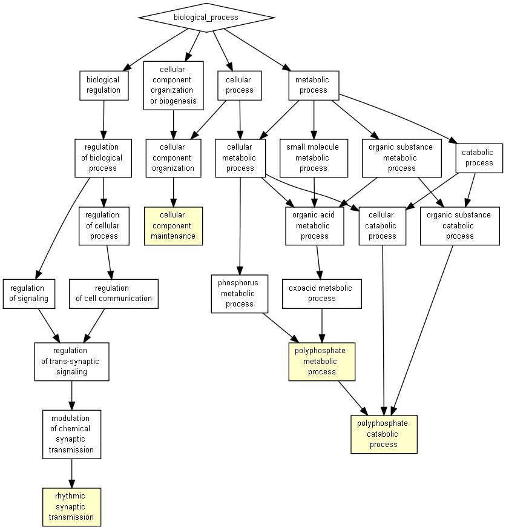

P-value color scale
| > 10-3 |
10-3 to 10-5 |
10-5 to 10-7 |
10-7 to 10-9 |
< 10-9 |

| GO term |
Description |
P-value |
FDR q-value |
Enrichment (N, B, n, b) |
Genes |
| GO:0006798 |
polyphosphate catabolic process |
5.31E-4 |
1E0 |
54.27 (16689,5,123,2) |
[+] Show genes
Inpp4a - inositol polyphosphate-4-phosphatase, type i
Prune2 - prune homolog 2 (drosophila)
|
| GO:0006797 |
polyphosphate metabolic process |
5.31E-4 |
1E0 |
54.27 (16689,5,123,2) |
[+] Show genes
Inpp4a - inositol polyphosphate-4-phosphatase, type i
Prune2 - prune homolog 2 (drosophila)
|
| GO:0043954 |
cellular component maintenance |
7.17E-4 |
1E0 |
9.87 (16689,55,123,4) |
[+] Show genes
Pard6a - par-6 (partitioning defective 6,) homolog alpha (c. elegans)
Cbln1 - cerebellin 1 precursor protein
Dgkz - diacylglycerol kinase zeta
Ckap5 - cytoskeleton associated protein 5
|
| GO:0060024 |
rhythmic synaptic transmission |
7.93E-4 |
1E0 |
45.23 (16689,6,123,2) |
[+] Show genes
Cacna1a - calcium channel, voltage-dependent, p/q type, alpha 1a subunit
Cacna2d2 - calcium channel, voltage-dependent, alpha 2/delta subunit 2
|
Species used: Mus musculus
The system has recognized 18071 genes out of 21088 gene terms entered by the user.
18071 genes were recognized by gene symbol and 0 genes by other gene IDs .
144 duplicate genes were removed (keeping the highest ranking instance of each gene) leaving a total of 17927 genes.
Only 16689 of these genes are associated with a GO term.
Output in Microsoft Excel format
The GOrilla database is periodically updated using the GO database and other sources.
The GOrilla database was last updated on Mar 6, 2021
This results page will be available on this site for one month from now (until
Jan 16, 2023
). You can bookmark this page and come back to it later.
'P-value' is the enrichment p-value computed according to the mHG or HG model. This p-value is not corrected for multiple testing of 15261 GO terms.
'FDR q-value' is the correction of the above p-value for multiple testing using the Benjamini and Hochberg (1995) method.
Namely, for the ith term (ranked according to p-value) the FDR q-value is (p-value * number of GO terms) / i.
Enrichment (N, B, n, b) is defined as follows:
N - is the total number of genes
B - is the total number of genes associated with a specific GO term
n - is the number of genes in the top of the user's input list or in the target set when appropriate
b - is the number of genes in the intersection
Enrichment = (b/n) / (B/N)
Genes: For each GO term you can see the list of associated genes that appear in the optimal top of the list.
Each gene name is specified by gene symbol followed by a short description of the gene
Back to the GOrilla main page